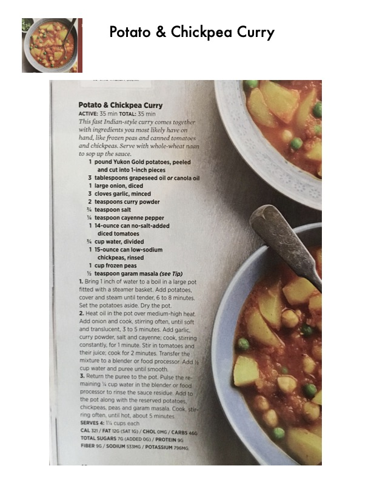

Potato & Chickpea Curry

Original cookbook page 42
This fast Indian-style curry comes together with ingredients you most likely have on hand, like frozen peas and canned tomatoes and chickpeas. Serve with whole-wheat naan to sop up the sauce.
Prep: 15 minutes • Cook: 20 minutes • Total: 35 minutes
Ingredients
- 1 pound Yukon Gold potatoes, peeled and cut into 1-inch pieces
- 3 tablespoons grapeseed oil or canola oil
- 1 large onion, diced
- 3 cloves garlic, minced
- 2 teaspoons curry powder
- 1/4 teaspoon salt
- 1/8 teaspoon cayenne pepper
- 1 14-ounce can no-salt-added diced tomatoes
- 1/2 cup water, divided
- 1 15-ounce can low-sodium chickpeas, rinsed
- 1 cup frozen peas
- 1/2 teaspoon garam masala (see Tip)
Instructions
- Bring 1 inch of water to a boil in a large pot fitted with a steamer basket. Add potatoes, cover and steam until tender, 6 to 8 minutes. Set the potatoes aside. Dry the pot.
- Heat oil in the pot over medium-high heat. Add onion and cook, stirring often, until soft and translucent, 3 to 5 minutes. Add garlic, curry powder, salt and cayenne; stir, stirring constantly, for 1 minute. Stir in tomatoes and their juice; cook for 2 minutes. Transfer the mixture to a blender or food processor. Add 1/4 cup water and puree until smooth.
- Return the puree to the pot. Pulse the remaining 1/4 cup water in the blender or food processor to rinse the sauce residue. Add to the pot along with the reserved potatoes, chickpeas, peas and garam masala. Cook, stirring often, until hot, about 5 minutes.
Recipe #42 from collection